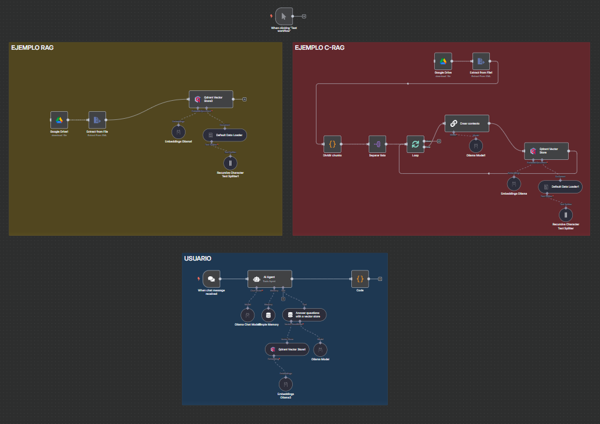
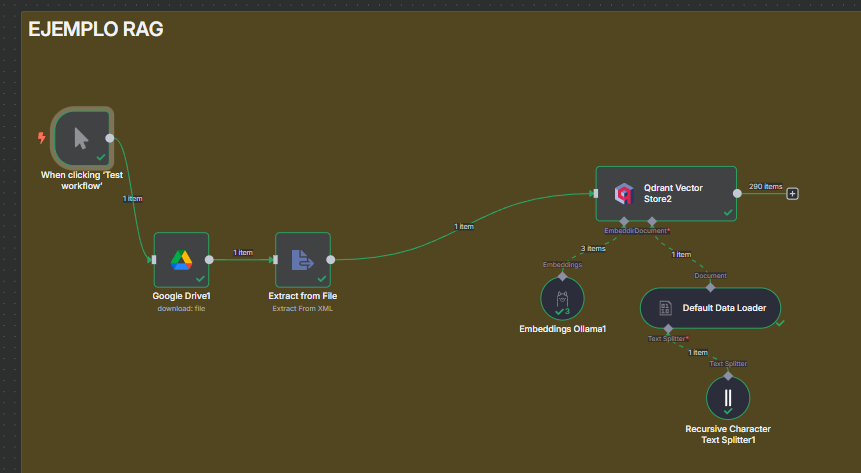
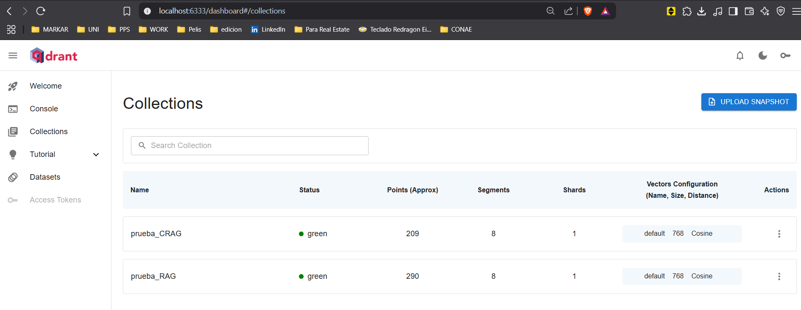
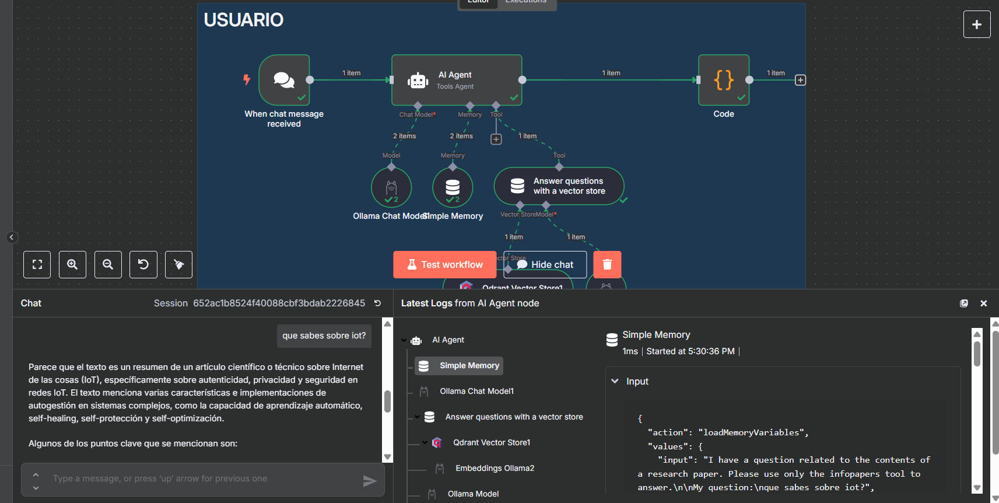

En esta sección se presentarán dos ejemplos prácticos de implementación de las arquitecturas RAG y CRAG que fueron explicadas en detalle en la sección de Tipos de Arquitecturas. Estos ejemplos demostrarán cómo aplicar los conceptos teóricos en casos reales.
Para comenzar con los ejemplos, necesitamos importar el flujo de trabajo de ejemplo en n8n. El archivo ejemplo_RAG_vs_CRAG.json contiene la configuración completa de ambos ejemplos. Para importarlo:
- En la interfaz de n8n, haz clic en el botón "Workflows" en el menú lateral
- Haz clic en el botón "Import from File" en la esquina superior derecha
- Navega hasta la carpeta
docs/implementacion/filesy selecciona el archivoejemplo_RAG_vs_CRAG.json - Haz clic en "Import"
Una vez importado, deberás ver algo como lo siguiente:

Figura 1: Ejemplo de RAG y CRAG en n8n
La implementación se divide en tres bloques principales:
- Bloque RAG (Amarillo): Implementa el flujo de trabajo del RAG tradicional
- Bloque CRAG (Rojo): Implementa el flujo de trabajo del CRAG
- Bloque de Consultas (Azul): Permite realizar consultas a la base de datos vectorial
Configuración de las Colecciones
Cada bloque de base de datos vectorial debe configurarse con su colección correspondiente:
- El bloque RAG se conecta a la colección
prueba_RAG - El bloque CRAG se conecta a la colección
prueba_CRAG - El bloque de consultas permite seleccionar la colección a consultar
Flujo de Trabajo RAG
El flujo de trabajo del RAG sigue estos pasos:
- Descarga un archivo XML desde Google Drive (extraído previamente de un paper mediante GROBID)
- Procesa el archivo para extraer el texto contenido
- Carga el contenido en la base de datos vectorial con una configuración recursiva que permite que cada chunk contenga información de contexto de los chunks adyacentes
Flujo de Trabajo CRAG
El flujo de trabajo del CRAG implementa una estrategia más sofisticada:
- Realiza la misma descarga y extracción inicial que el RAG
- Divide manualmente el contenido en chunks
- Procesa los chunks en grupos de 5 mediante un loop
- Para cada grupo, utiliza un modelo de lenguaje para generar contexto individual basado en el documento completo
- Carga los chunks enriquecidos en la base de datos vectorial
- Nota: No se utiliza la configuración recursiva ya que la separación y enriquecimiento de chunks se realiza previamente
Ejecución del flujo de trabajo
para la ejecución debemos agregar el bloque when clicking 'test workflow' y conectarlo con el bloque de google drive para testear el flujo de trabajo que queremos ejecutar, ya sea RAG o CRAG.

Figura 2: Ejecución del flujo de trabajo RAG
Una vez ejecutado el flujo de trabajo, se puede observar el proceso completo en acción:
Para verificar que los datos se han cargado correctamente, se puede acceder al panel de control de Qdrant a través de:
Aquí se puede visualizar las colecciones creadas y verificar que los vectores se hayan almacenado correctamente.

Figura 3: Colecciones en Qdrant
una vez llegado a este punto, está preparada la base de datos para que el agente pueda preguntar algo relacionado con el contenido que se cargó.

Figura 4: Pregunta al agente